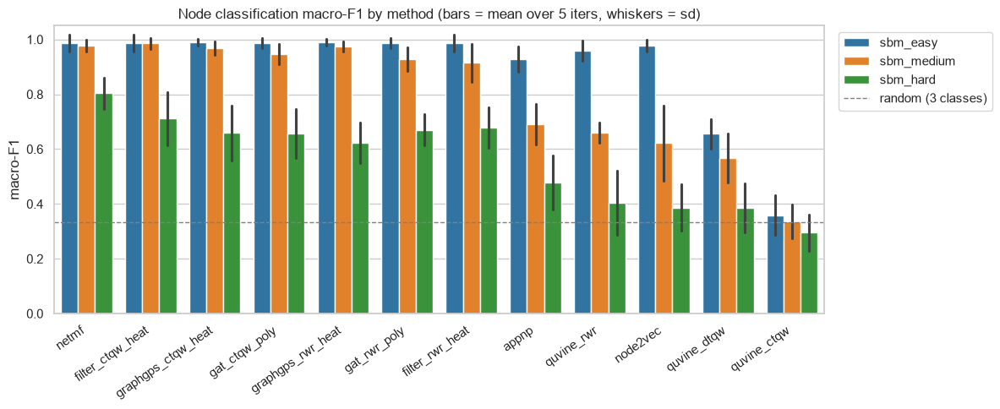
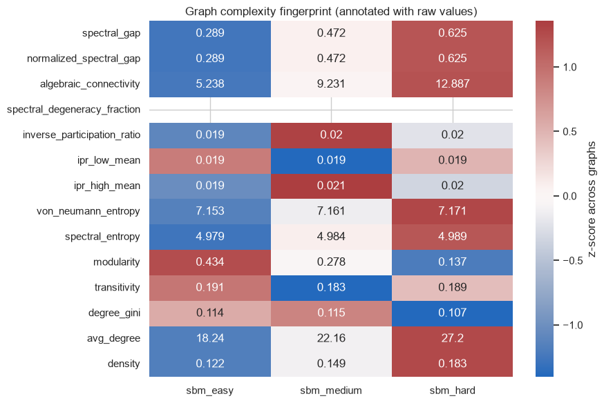
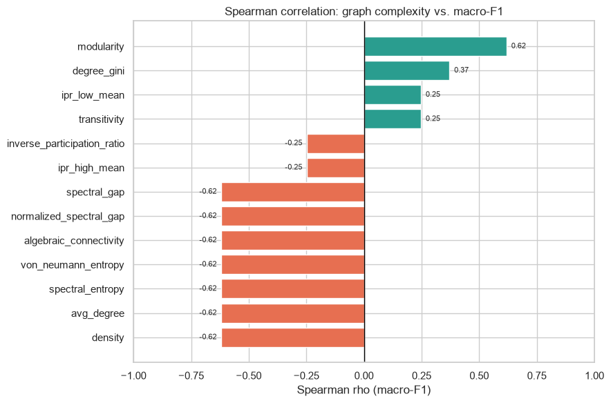
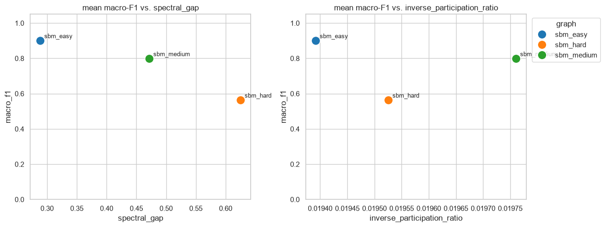

QuVINE Tutorial — quantum graph embeddings inside QBioCode#
This tutorial mirrors the QProfiler tutorial, but for QuVINE (Quantum View-based Network Embeddings), now vendored into QBioCode as an in-tree app.
What is QuVINE (in QBioCode)?#
QProfiler characterizes a tabular dataset (samples × features) and benchmarks ML models on it. QuVINE works on a different modality — a graph — and produces node embeddings:
``qbiocode.apps.quvine.embed`` — turn a
networkx.Graphinto a node-embedding matrix using classical or quantum walks (RWR / CTQW / DTQW) and a registry of comparison methods (node2vec, NetMF, APPNP, GAT, GraphGPS, quantum-calibrated filters, …).``qbiocode.evaluate_graph`` — the graph analogue of QProfiler’s
evaluate(df, y): a one-row summary of ~80 graph-complexity metrics (spectral, topological, structural).
QuVINE ships inside QBioCode, behind the optional [quvine] extra (see Install below).
What this notebook does#
Generate three graphs of increasing difficulty (small, so it runs quickly).
Embed each with 12 methods and score a node-classification task over 5 iterations.
Summarize each graph’s complexity (spectral gap, IPR, spectral degeneracy, …).
Correlate those complexity measures with macro-F1 and visualize the relationships.
Install. QuVINE ships behind an optional extra, so a plain pip install qbiocode does not pull its dependencies (gensim, hiperwalk, node2vec, torch-geometric, python-louvain, ripser, omegaconf). Install it with:
pip install "qbiocode[quvine]"
Calling a quvine_* method without the extra raises an error naming the missing package and this exact command, rather than a bare ModuleNotFoundError.
1. Setup and imports#
[1]:
import os, warnings
warnings.filterwarnings("ignore")
# Pin OpenMP to a single thread BEFORE importing qbiocode. torch, xgboost and
# qiskit-aer each vendor their own copy of libomp, and on macOS whichever one
# initialises second crashes the process with a bare SIGSEGV -- no traceback,
# just a dead kernel -- the first time it opens a parallel region. The
# torch-backed methods below (appnp, gat_*, graphgps_*) hit it every time.
# See qbiocode/utils/_openmp.py for the full analysis.
os.environ.setdefault("OMP_NUM_THREADS", "1")
import numpy as np
import pandas as pd
import networkx as nx
import matplotlib.pyplot as plt
import seaborn as sns
from qbiocode.apps.quvine import embed, list_methods
from qbiocode import evaluate_graph
from qbiocode.apps.quvine.evaluation.classification import evaluate_node_classification
sns.set_style("whitegrid")
sns.set_context("notebook")
print("total QuVINE methods available:", len(list_methods()))
total QuVINE methods available: 83
2. Generate three graphs#
We build three stochastic block models (SBMs) with 3 planted communities of 20 nodes each (60 nodes total). They differ only in the between-community edge probability p_out: as p_out grows the communities blur together, so the graphs go from easy → medium → hard for a community-based node-classification task.
Because the communities are planted, we use block membership as the ground-truth labels — no label inference needed. QuVINE’s walk corpus needs string node ids, so we relabel to str.
[2]:
def make_sbm(p_out, seed=1, sizes=(50, 50, 50), p_in=0.28):
k = len(sizes)
probs = [[p_in if i == j else p_out for j in range(k)] for i in range(k)]
G = nx.stochastic_block_model(list(sizes), probs, seed=seed)
labels = {n: G.nodes[n]["block"] for n in G.nodes} # planted community = label
G = nx.relabel_nodes(G, {n: str(n) for n in G.nodes})
labels = {str(n): b for n, b in labels.items()}
return G, labels
# Same seed + p_in for all three; only p_out (between-community density) changes,
# so the difficulty gradient is a controlled comparison. All three are connected.
graphs = {
"sbm_easy": make_sbm(p_out=0.04),
"sbm_medium": make_sbm(p_out=0.08),
"sbm_hard": make_sbm(p_out=0.14),
}
for name, (G, labels) in graphs.items():
print(f"{name:11s} nodes={G.number_of_nodes():3d} edges={G.number_of_edges():4d} "
f"classes={len(set(labels.values()))} connected={nx.is_connected(G)}")
sbm_easy nodes=150 edges=1368 classes=3 connected=True
sbm_medium nodes=150 edges=1662 classes=3 connected=True
sbm_hard nodes=150 edges=2040 classes=3 connected=True
3. Choose task and methods#
Task: node classification (predict each node’s community from its embedding).
Methods (12): three QuVINE walks, two quantum-calibrated spectral filters, two quantum-calibrated GAT variants, two quantum-calibrated GraphGPS variants, and three classical baselines.
[3]:
methods = [
# QuVINE SGNS walks
"quvine_rwr", "quvine_ctqw", "quvine_dtqw",
# quantum-calibrated spectral filters
"filter_rwr_heat", "filter_ctqw_heat",
# quantum-calibrated GAT
"gat_rwr_poly", "gat_ctqw_poly",
# quantum-calibrated GraphGPS
"graphgps_rwr_heat", "graphgps_ctqw_heat",
# classical baselines
"node2vec", "netmf", "appnp",
]
N_ITER = 5
# Small/fast embedding settings -- drop these overrides for full-quality runs.
fast = {
"train": {"embedding_dim": 32, "epochs": 10, "workers": 1},
"walks": {"num_walks": 8, "walk_length": 8},
"views": {"num_views": 4},
}
print(f"{len(methods)} methods x {len(graphs)} graphs x {N_ITER} iters = "
f"{len(methods) * len(graphs) * N_ITER} embedding runs")
12 methods x 3 graphs x 5 iters = 180 embedding runs
4. Run the benchmark#
For every (graph, method, iteration) we embed the graph and evaluate node classification, recording macro-F1 and accuracy. Each iteration uses a different seed so embeddings and the train/test split vary — giving us a spread to average over.
[4]:
records = []
for gname, (G, labels) in graphs.items():
node_list = list(G.nodes)
for method in methods:
for it in range(N_ITER):
try:
res = embed(G, method, overrides=fast, base_seed=42 + it)
nc = evaluate_node_classification(
res.embedding, labels, res.node_order,
classifier="logistic", random_state=42 + it,
)
records.append({
"graph": gname, "method": method, "iter": it,
"macro_f1": nc.get("f1_macro"), "accuracy": nc.get("accuracy"),
"dim": res.dim, "embed_time_s": round(res.execution_time, 3),
})
except Exception as e:
records.append({"graph": gname, "method": method, "iter": it,
"macro_f1": np.nan, "accuracy": np.nan, "error": str(e)[:80]})
print(f" done: {gname}")
results = pd.DataFrame(records)
print("collected", len(results), "rows")
results.head()
Exception ignored in: 'gensim.models.word2vec_inner.our_dot_float'
Computing transition probabilities: 100%|██████████| 150/150 [00:00<00:00, 3773.96it/s]
<env>/lib/python3.12/site-packages/node2vec/edges.py:6: UserWarning: pkg_resources is deprecated as an API. See https://setuptools.pypa.io/en/latest/pkg_resources.html. The pkg_resources package is slated for removal as early as 2025-11-30. Refrain from using this package or pin to Setuptools<81.
import pkg_resources
<env>/lib/python3.12/site-packages/node2vec/edges.py:6: UserWarning: pkg_resources is deprecated as an API. See https://setuptools.pypa.io/en/latest/pkg_resources.html. The pkg_resources package is slated for removal as early as 2025-11-30. Refrain from using this package or pin to Setuptools<81.
import pkg_resources
<env>/lib/python3.12/site-packages/node2vec/edges.py:6: UserWarning: pkg_resources is deprecated as an API. See https://setuptools.pypa.io/en/latest/pkg_resources.html. The pkg_resources package is slated for removal as early as 2025-11-30. Refrain from using this package or pin to Setuptools<81.
import pkg_resources
<env>/lib/python3.12/site-packages/node2vec/edges.py:6: UserWarning: pkg_resources is deprecated as an API. See https://setuptools.pypa.io/en/latest/pkg_resources.html. The pkg_resources package is slated for removal as early as 2025-11-30. Refrain from using this package or pin to Setuptools<81.
import pkg_resources
<env>/lib/python3.12/site-packages/node2vec/edges.py:6: UserWarning: pkg_resources is deprecated as an API. See https://setuptools.pypa.io/en/latest/pkg_resources.html. The pkg_resources package is slated for removal as early as 2025-11-30. Refrain from using this package or pin to Setuptools<81.
import pkg_resources
<env>/lib/python3.12/site-packages/node2vec/edges.py:6: UserWarning: pkg_resources is deprecated as an API. See https://setuptools.pypa.io/en/latest/pkg_resources.html. The pkg_resources package is slated for removal as early as 2025-11-30. Refrain from using this package or pin to Setuptools<81.
import pkg_resources
<env>/lib/python3.12/site-packages/node2vec/edges.py:6: UserWarning: pkg_resources is deprecated as an API. See https://setuptools.pypa.io/en/latest/pkg_resources.html. The pkg_resources package is slated for removal as early as 2025-11-30. Refrain from using this package or pin to Setuptools<81.
import pkg_resources
<env>/lib/python3.12/site-packages/node2vec/edges.py:6: UserWarning: pkg_resources is deprecated as an API. See https://setuptools.pypa.io/en/latest/pkg_resources.html. The pkg_resources package is slated for removal as early as 2025-11-30. Refrain from using this package or pin to Setuptools<81.
import pkg_resources
Generating walks (CPU: 2): 100%|██████████| 2/2 [00:00<00:00, 111.60it/s]
Generating walks (CPU: 1): 100%|██████████| 2/2 [00:00<00:00, 102.82it/s]
Generating walks (CPU: 3): 100%|██████████| 1/1 [00:00<00:00, 109.99it/s]
Generating walks (CPU: 4): 100%|██████████| 1/1 [00:00<00:00, 106.54it/s]
Generating walks (CPU: 6): 100%|██████████| 1/1 [00:00<00:00, 107.02it/s]
Generating walks (CPU: 5): 100%|██████████| 1/1 [00:00<00:00, 109.45it/s]
Generating walks (CPU: 7): 100%|██████████| 1/1 [00:00<00:00, 101.22it/s]
Generating walks (CPU: 8): 100%|██████████| 1/1 [00:00<00:00, 103.81it/s]
Computing transition probabilities: 100%|██████████| 150/150 [00:00<00:00, 3858.44it/s]
Generating walks (CPU: 1): 100%|██████████| 2/2 [00:00<00:00, 116.83it/s]
Generating walks (CPU: 2): 100%|██████████| 2/2 [00:00<00:00, 115.35it/s]
Generating walks (CPU: 3): 100%|██████████| 1/1 [00:00<00:00, 116.60it/s]
Generating walks (CPU: 4): 100%|██████████| 1/1 [00:00<00:00, 113.04it/s]
Generating walks (CPU: 5): 100%|██████████| 1/1 [00:00<00:00, 114.74it/s]
Generating walks (CPU: 6): 100%|██████████| 1/1 [00:00<00:00, 115.62it/s]
Generating walks (CPU: 7): 100%|██████████| 1/1 [00:00<00:00, 113.57it/s]
Generating walks (CPU: 8): 100%|██████████| 1/1 [00:00<00:00, 119.75it/s]
Computing transition probabilities: 100%|██████████| 150/150 [00:00<00:00, 3865.88it/s]
Generating walks (CPU: 1): 100%|██████████| 2/2 [00:00<00:00, 116.67it/s]
Generating walks (CPU: 2): 100%|██████████| 2/2 [00:00<00:00, 116.06it/s]
Generating walks (CPU: 3): 100%|██████████| 1/1 [00:00<00:00, 117.78it/s]
Generating walks (CPU: 4): 100%|██████████| 1/1 [00:00<00:00, 118.36it/s]
Generating walks (CPU: 5): 100%|██████████| 1/1 [00:00<00:00, 117.76it/s]
Generating walks (CPU: 6): 100%|██████████| 1/1 [00:00<00:00, 114.31it/s]
Generating walks (CPU: 7): 100%|██████████| 1/1 [00:00<00:00, 118.09it/s]
Generating walks (CPU: 8): 100%|██████████| 1/1 [00:00<00:00, 117.87it/s]
Computing transition probabilities: 100%|██████████| 150/150 [00:00<00:00, 3790.74it/s]
Generating walks (CPU: 1): 100%|██████████| 2/2 [00:00<00:00, 117.21it/s]
Generating walks (CPU: 2): 100%|██████████| 2/2 [00:00<00:00, 115.04it/s]
Generating walks (CPU: 3): 100%|██████████| 1/1 [00:00<00:00, 114.54it/s]
Generating walks (CPU: 4): 100%|██████████| 1/1 [00:00<00:00, 118.44it/s]
Generating walks (CPU: 5): 100%|██████████| 1/1 [00:00<00:00, 112.55it/s]
Generating walks (CPU: 6): 100%|██████████| 1/1 [00:00<00:00, 114.76it/s]
Generating walks (CPU: 7): 100%|██████████| 1/1 [00:00<00:00, 117.83it/s]
Generating walks (CPU: 8): 100%|██████████| 1/1 [00:00<00:00, 115.61it/s]
Computing transition probabilities: 100%|██████████| 150/150 [00:00<00:00, 3875.67it/s]
Generating walks (CPU: 1): 100%|██████████| 2/2 [00:00<00:00, 116.23it/s]
Generating walks (CPU: 2): 100%|██████████| 2/2 [00:00<00:00, 116.73it/s]
Generating walks (CPU: 3): 100%|██████████| 1/1 [00:00<00:00, 116.70it/s]
Generating walks (CPU: 4): 100%|██████████| 1/1 [00:00<00:00, 116.67it/s]
Generating walks (CPU: 5): 100%|██████████| 1/1 [00:00<00:00, 116.28it/s]
Generating walks (CPU: 6): 100%|██████████| 1/1 [00:00<00:00, 113.61it/s]
Generating walks (CPU: 7): 100%|██████████| 1/1 [00:00<00:00, 110.67it/s]
Generating walks (CPU: 8): 100%|██████████| 1/1 [00:00<00:00, 112.14it/s]
done: sbm_easy
Computing transition probabilities: 100%|██████████| 150/150 [00:00<00:00, 2582.24it/s]
Generating walks (CPU: 1): 100%|██████████| 2/2 [00:00<00:00, 111.42it/s]
Generating walks (CPU: 2): 100%|██████████| 2/2 [00:00<00:00, 109.08it/s]
Generating walks (CPU: 3): 100%|██████████| 1/1 [00:00<00:00, 113.51it/s]
Generating walks (CPU: 4): 100%|██████████| 1/1 [00:00<00:00, 110.84it/s]
Generating walks (CPU: 5): 100%|██████████| 1/1 [00:00<00:00, 113.04it/s]
Generating walks (CPU: 6): 100%|██████████| 1/1 [00:00<00:00, 113.70it/s]
Generating walks (CPU: 7): 100%|██████████| 1/1 [00:00<00:00, 105.77it/s]
Generating walks (CPU: 8): 100%|██████████| 1/1 [00:00<00:00, 109.72it/s]
Computing transition probabilities: 100%|██████████| 150/150 [00:00<00:00, 2664.39it/s]
Generating walks (CPU: 1): 100%|██████████| 2/2 [00:00<00:00, 107.43it/s]
Generating walks (CPU: 2): 100%|██████████| 2/2 [00:00<00:00, 106.05it/s]
Generating walks (CPU: 3): 100%|██████████| 1/1 [00:00<00:00, 99.61it/s]
Generating walks (CPU: 4): 100%|██████████| 1/1 [00:00<00:00, 108.91it/s]
Generating walks (CPU: 5): 100%|██████████| 1/1 [00:00<00:00, 107.86it/s]
Generating walks (CPU: 6): 100%|██████████| 1/1 [00:00<00:00, 112.70it/s]
Generating walks (CPU: 7): 100%|██████████| 1/1 [00:00<00:00, 110.20it/s]
Generating walks (CPU: 8): 100%|██████████| 1/1 [00:00<00:00, 101.85it/s]
Computing transition probabilities: 100%|██████████| 150/150 [00:00<00:00, 2701.01it/s]
Generating walks (CPU: 1): 100%|██████████| 2/2 [00:00<00:00, 110.85it/s]
Generating walks (CPU: 2): 100%|██████████| 2/2 [00:00<00:00, 110.64it/s]
Generating walks (CPU: 3): 100%|██████████| 1/1 [00:00<00:00, 110.39it/s]
Generating walks (CPU: 4): 100%|██████████| 1/1 [00:00<00:00, 113.22it/s]
Generating walks (CPU: 5): 100%|██████████| 1/1 [00:00<00:00, 112.77it/s]
Generating walks (CPU: 6): 100%|██████████| 1/1 [00:00<00:00, 106.40it/s]
Generating walks (CPU: 7): 100%|██████████| 1/1 [00:00<00:00, 104.89it/s]
Generating walks (CPU: 8): 100%|██████████| 1/1 [00:00<00:00, 109.23it/s]
Computing transition probabilities: 100%|██████████| 150/150 [00:00<00:00, 2632.50it/s]
Generating walks (CPU: 1): 100%|██████████| 2/2 [00:00<00:00, 113.13it/s]
Generating walks (CPU: 2): 100%|██████████| 2/2 [00:00<00:00, 114.48it/s]
Generating walks (CPU: 3): 100%|██████████| 1/1 [00:00<00:00, 111.96it/s]
Generating walks (CPU: 4): 100%|██████████| 1/1 [00:00<00:00, 108.74it/s]
Generating walks (CPU: 5): 100%|██████████| 1/1 [00:00<00:00, 113.34it/s]
Generating walks (CPU: 6): 100%|██████████| 1/1 [00:00<00:00, 115.53it/s]
Generating walks (CPU: 7): 100%|██████████| 1/1 [00:00<00:00, 103.52it/s]
Generating walks (CPU: 8): 100%|██████████| 1/1 [00:00<00:00, 114.13it/s]
Computing transition probabilities: 100%|██████████| 150/150 [00:00<00:00, 2605.85it/s]
Generating walks (CPU: 1): 100%|██████████| 2/2 [00:00<00:00, 109.49it/s]
Generating walks (CPU: 2): 100%|██████████| 2/2 [00:00<00:00, 106.97it/s]
Generating walks (CPU: 3): 100%|██████████| 1/1 [00:00<00:00, 113.95it/s]
Generating walks (CPU: 4): 100%|██████████| 1/1 [00:00<00:00, 107.30it/s]
Generating walks (CPU: 5): 100%|██████████| 1/1 [00:00<00:00, 109.12it/s]
Generating walks (CPU: 6): 100%|██████████| 1/1 [00:00<00:00, 106.70it/s]
Generating walks (CPU: 7): 100%|██████████| 1/1 [00:00<00:00, 110.68it/s]
Generating walks (CPU: 8): 100%|██████████| 1/1 [00:00<00:00, 109.22it/s]
done: sbm_medium
Computing transition probabilities: 100%|██████████| 150/150 [00:00<00:00, 1801.87it/s]
Generating walks (CPU: 1): 100%|██████████| 2/2 [00:00<00:00, 105.88it/s]
Generating walks (CPU: 2): 100%|██████████| 2/2 [00:00<00:00, 108.36it/s]
Generating walks (CPU: 3): 100%|██████████| 1/1 [00:00<00:00, 107.68it/s]
Generating walks (CPU: 4): 100%|██████████| 1/1 [00:00<00:00, 103.32it/s]
Generating walks (CPU: 5): 100%|██████████| 1/1 [00:00<00:00, 104.57it/s]
Generating walks (CPU: 6): 100%|██████████| 1/1 [00:00<00:00, 103.50it/s]
Generating walks (CPU: 7): 100%|██████████| 1/1 [00:00<00:00, 106.54it/s]
Generating walks (CPU: 8): 100%|██████████| 1/1 [00:00<00:00, 105.21it/s]
Computing transition probabilities: 100%|██████████| 150/150 [00:00<00:00, 1831.84it/s]
Generating walks (CPU: 1): 100%|██████████| 2/2 [00:00<00:00, 106.58it/s]
Generating walks (CPU: 2): 100%|██████████| 2/2 [00:00<00:00, 109.93it/s]
Generating walks (CPU: 3): 100%|██████████| 1/1 [00:00<00:00, 104.57it/s]
Generating walks (CPU: 4): 100%|██████████| 1/1 [00:00<00:00, 104.88it/s]
Generating walks (CPU: 5): 100%|██████████| 1/1 [00:00<00:00, 106.16it/s]
Generating walks (CPU: 6): 100%|██████████| 1/1 [00:00<00:00, 109.95it/s]
Generating walks (CPU: 7): 100%|██████████| 1/1 [00:00<00:00, 108.75it/s]
Generating walks (CPU: 8): 100%|██████████| 1/1 [00:00<00:00, 107.35it/s]
Computing transition probabilities: 100%|██████████| 150/150 [00:00<00:00, 1834.96it/s]
Generating walks (CPU: 1): 100%|██████████| 2/2 [00:00<00:00, 106.49it/s]
Generating walks (CPU: 3): 100%|██████████| 1/1 [00:00<00:00, 106.17it/s]
Generating walks (CPU: 2): 100%|██████████| 2/2 [00:00<00:00, 107.88it/s]
Generating walks (CPU: 4): 100%|██████████| 1/1 [00:00<00:00, 105.83it/s]
Generating walks (CPU: 5): 100%|██████████| 1/1 [00:00<00:00, 101.44it/s]
Generating walks (CPU: 6): 100%|██████████| 1/1 [00:00<00:00, 108.55it/s]
Generating walks (CPU: 7): 100%|██████████| 1/1 [00:00<00:00, 108.38it/s]
Generating walks (CPU: 8): 100%|██████████| 1/1 [00:00<00:00, 107.77it/s]
Computing transition probabilities: 100%|██████████| 150/150 [00:00<00:00, 1826.55it/s]
Generating walks (CPU: 1): 100%|██████████| 2/2 [00:00<00:00, 107.70it/s]
Generating walks (CPU: 2): 100%|██████████| 2/2 [00:00<00:00, 109.17it/s]
Generating walks (CPU: 3): 100%|██████████| 1/1 [00:00<00:00, 107.47it/s]
Generating walks (CPU: 4): 100%|██████████| 1/1 [00:00<00:00, 107.76it/s]
Generating walks (CPU: 5): 100%|██████████| 1/1 [00:00<00:00, 105.22it/s]
Generating walks (CPU: 6): 100%|██████████| 1/1 [00:00<00:00, 106.57it/s]
Generating walks (CPU: 7): 100%|██████████| 1/1 [00:00<00:00, 104.37it/s]
Generating walks (CPU: 8): 100%|██████████| 1/1 [00:00<00:00, 110.99it/s]
Computing transition probabilities: 100%|██████████| 150/150 [00:00<00:00, 1838.44it/s]
Generating walks (CPU: 1): 100%|██████████| 2/2 [00:00<00:00, 107.85it/s]
Generating walks (CPU: 2): 100%|██████████| 2/2 [00:00<00:00, 106.20it/s]
Generating walks (CPU: 3): 100%|██████████| 1/1 [00:00<00:00, 102.03it/s]
Generating walks (CPU: 4): 100%|██████████| 1/1 [00:00<00:00, 102.02it/s]
Generating walks (CPU: 5): 100%|██████████| 1/1 [00:00<00:00, 107.28it/s]
Generating walks (CPU: 6): 100%|██████████| 1/1 [00:00<00:00, 105.19it/s]
Generating walks (CPU: 7): 100%|██████████| 1/1 [00:00<00:00, 108.12it/s]
Generating walks (CPU: 8): 100%|██████████| 1/1 [00:00<00:00, 107.45it/s]
done: sbm_hard
collected 180 rows
[4]:
| graph | method | iter | macro_f1 | accuracy | dim | embed_time_s | |
|---|---|---|---|---|---|---|---|
| 0 | sbm_easy | quvine_rwr | 0 | 0.932542 | 0.933333 | 32 | 2.161 |
| 1 | sbm_easy | quvine_rwr | 1 | 1.000000 | 1.000000 | 32 | 2.160 |
| 2 | sbm_easy | quvine_rwr | 2 | 0.909370 | 0.911111 | 32 | 2.046 |
| 3 | sbm_easy | quvine_rwr | 3 | 0.977753 | 0.977778 | 32 | 2.019 |
| 4 | sbm_easy | quvine_rwr | 4 | 0.977753 | 0.977778 | 32 | 2.080 |
Per-method summary (mean over graphs & iterations)#
[5]:
summary = (results.groupby("method")
.agg(macro_f1_mean=("macro_f1", "mean"),
macro_f1_std=("macro_f1", "std"),
accuracy_mean=("accuracy", "mean"),
embed_time_s=("embed_time_s", "mean"))
.sort_values("macro_f1_mean", ascending=False)
.round(3))
summary
[5]:
| macro_f1_mean | macro_f1_std | accuracy_mean | embed_time_s | |
|---|---|---|---|---|
| method | ||||
| netmf | 0.923 | 0.095 | 0.923 | 0.014 |
| filter_ctqw_heat | 0.895 | 0.145 | 0.896 | 0.194 |
| graphgps_ctqw_heat | 0.873 | 0.166 | 0.876 | 1.163 |
| gat_ctqw_poly | 0.863 | 0.161 | 0.867 | 1.440 |
| graphgps_rwr_heat | 0.863 | 0.180 | 0.864 | 1.144 |
| gat_rwr_poly | 0.862 | 0.148 | 0.864 | 0.967 |
| filter_rwr_heat | 0.860 | 0.148 | 0.861 | 0.179 |
| appnp | 0.698 | 0.204 | 0.704 | 0.160 |
| quvine_rwr | 0.675 | 0.245 | 0.680 | 2.179 |
| node2vec | 0.662 | 0.266 | 0.665 | 0.509 |
| quvine_dtqw | 0.536 | 0.137 | 0.539 | 3.656 |
| quvine_ctqw | 0.330 | 0.067 | 0.335 | 3.254 |
Macro-F1 by method and graph difficulty#
[6]:
fig, ax = plt.subplots(figsize=(12, 5))
order = summary.index.tolist()
sns.barplot(data=results, x="method", y="macro_f1", hue="graph",
order=order, hue_order=list(graphs), errorbar="sd", ax=ax)
ax.set_title("Node classification macro-F1 by method (bars = mean over 5 iters, whiskers = sd)")
ax.set_xlabel(""); ax.set_ylabel("macro-F1"); ax.set_ylim(0, 1.05)
ax.axhline(1/3, ls="--", c="gray", lw=1, label="random (3 classes)")
ax.set_xticklabels(ax.get_xticklabels(), rotation=35, ha="right")
ax.legend(bbox_to_anchor=(1.01, 1), loc="upper left")
plt.tight_layout(); plt.show()

5. Graph complexity metrics#
evaluate_graph returns ~80 metrics per graph. We pull a curated set spanning connectivity, spectral localization (IPR), spectral degeneracy, entropy, and community structure — the kinds of measures hypothesized to track how hard a graph is to embed/classify.
[7]:
complexity_cols = [
"spectral_gap", "normalized_spectral_gap", "algebraic_connectivity",
"spectral_degeneracy_fraction", # spectral degeneracy
"inverse_participation_ratio", "ipr_low_mean", "ipr_high_mean", # IPR / localization
"von_neumann_entropy", "spectral_entropy",
"modularity", "transitivity", "degree_gini", "avg_degree", "density",
]
rows = []
for gname, (G, _labels) in graphs.items():
ev = evaluate_graph(G, name=gname)
row = {"graph": gname}
row.update({c: float(ev[c].iloc[0]) for c in complexity_cols if c in ev.columns})
rows.append(row)
complexity = pd.DataFrame(rows).set_index("graph")
complexity.T.round(4)
[7]:
| graph | sbm_easy | sbm_medium | sbm_hard |
|---|---|---|---|
| spectral_gap | 0.2887 | 0.4719 | 0.6253 |
| normalized_spectral_gap | 0.2887 | 0.4719 | 0.6253 |
| algebraic_connectivity | 5.2381 | 9.2314 | 12.8869 |
| spectral_degeneracy_fraction | 0.0000 | 0.0000 | 0.0000 |
| inverse_participation_ratio | 0.0194 | 0.0198 | 0.0195 |
| ipr_low_mean | 0.0195 | 0.0190 | 0.0194 |
| ipr_high_mean | 0.0194 | 0.0205 | 0.0197 |
| von_neumann_entropy | 7.1532 | 7.1608 | 7.1715 |
| spectral_entropy | 4.9788 | 4.9844 | 4.9888 |
| modularity | 0.4344 | 0.2780 | 0.1369 |
| transitivity | 0.1914 | 0.1827 | 0.1895 |
| degree_gini | 0.1141 | 0.1152 | 0.1066 |
| avg_degree | 18.2400 | 22.1600 | 27.2000 |
| density | 0.1224 | 0.1487 | 0.1826 |
Complexity fingerprint across the three graphs#
[8]:
# z-score each metric across the 3 graphs so they are visually comparable on one heatmap.
z = complexity.copy()
z = (z - z.mean()) / z.std(ddof=0)
fig, ax = plt.subplots(figsize=(9, 6))
sns.heatmap(z.T, annot=complexity.T.round(3), fmt="", cmap="vlag", center=0,
cbar_kws={"label": "z-score across graphs"}, ax=ax)
ax.set_title("Graph complexity fingerprint (annotated with raw values)")
ax.set_xlabel(""); ax.set_ylabel("")
plt.tight_layout(); plt.show()

6. Correlate complexity with node-classification performance#
We merge each graph’s complexity metrics onto every result row and compute the Spearman correlation between each complexity metric and macro-F1 across all (graph, method, iteration) runs. A positive value means “higher metric ⟶ easier classification”.
With only three distinct graphs the complexity axis takes three values, so treat these correlations as illustrative of the trend (harder graphs ⟶ lower F1) rather than precise effect sizes.
[9]:
from scipy.stats import spearmanr
merged = results.merge(complexity.reset_index(), on="graph", how="left").dropna(subset=["macro_f1"])
# Drop metrics that are constant across the three graphs (no variance -> undefined correlation).
constant = [c for c in complexity_cols if merged[c].nunique() <= 1]
active = [c for c in complexity_cols if c not in constant]
if constant:
print("constant across these graphs (skipped):", constant)
corr = []
for c in active:
rho, pval = spearmanr(merged[c], merged["macro_f1"])
corr.append({"metric": c, "spearman_rho": rho, "p_value": pval})
corr_df = pd.DataFrame(corr).sort_values("spearman_rho", ascending=False).reset_index(drop=True)
corr_df.round(3)
constant across these graphs (skipped): ['spectral_degeneracy_fraction']
[9]:
| metric | spearman_rho | p_value | |
|---|---|---|---|
| 0 | modularity | 0.619 | 0.000 |
| 1 | degree_gini | 0.372 | 0.000 |
| 2 | ipr_low_mean | 0.248 | 0.001 |
| 3 | transitivity | 0.248 | 0.001 |
| 4 | inverse_participation_ratio | -0.248 | 0.001 |
| 5 | ipr_high_mean | -0.248 | 0.001 |
| 6 | spectral_gap | -0.619 | 0.000 |
| 7 | normalized_spectral_gap | -0.619 | 0.000 |
| 8 | algebraic_connectivity | -0.619 | 0.000 |
| 9 | von_neumann_entropy | -0.619 | 0.000 |
| 10 | spectral_entropy | -0.619 | 0.000 |
| 11 | avg_degree | -0.619 | 0.000 |
| 12 | density | -0.619 | 0.000 |
Correlation bar chart#
[10]:
fig, ax = plt.subplots(figsize=(9, 6))
colors = ["#2a9d8f" if v >= 0 else "#e76f51" for v in corr_df["spearman_rho"]]
ax.barh(corr_df["metric"], corr_df["spearman_rho"], color=colors)
ax.invert_yaxis() # largest positive on top
ax.axvline(0, c="black", lw=1)
ax.set_title("Spearman correlation: graph complexity vs. macro-F1")
ax.set_xlabel("Spearman rho (macro-F1)"); ax.set_xlim(-1, 1)
for y, v in enumerate(corr_df["spearman_rho"]):
ax.text(v + (0.02 if v >= 0 else -0.02), y, f"{v:.2f}",
va="center", ha="left" if v >= 0 else "right", fontsize=8)
plt.tight_layout(); plt.show()

How performance tracks two key metrics#
[11]:
# Mean macro-F1 per graph vs. a connectivity metric (spectral gap) and a localization metric (IPR).
per_graph = (results.groupby("graph")["macro_f1"].mean()
.to_frame("macro_f1").join(complexity))
fig, axes = plt.subplots(1, 2, figsize=(13, 5))
for ax, metric in zip(axes, ["spectral_gap", "inverse_participation_ratio"]):
sns.scatterplot(data=per_graph, x=metric, y="macro_f1", hue=per_graph.index,
s=180, ax=ax, legend=(ax is axes[1]))
for g, r in per_graph.iterrows():
ax.annotate(g, (r[metric], r["macro_f1"]), xytext=(6, 4),
textcoords="offset points", fontsize=9)
ax.set_title(f"mean macro-F1 vs. {metric}")
ax.set_ylim(0, 1.05)
if axes[1].get_legend():
axes[1].legend(title="graph", bbox_to_anchor=(1.01, 1), loc="upper left")
plt.tight_layout(); plt.show()

7. Command-line interface#
The same embedding is available as the quvine console script (installed with the [quvine] extra), mirroring qprofiler / qsage:
quvine --list-methods # list all methods
quvine --edgelist edges.csv --method quvine_fused --output out/ # -> embedding.csv + meta.json
Integer node ids in the edge list are handled automatically (coerced to strings).
Summary#
In this tutorial you:
✅ Generated three graphs of increasing difficulty (planted-community SBMs)
✅ Embedded them with 12 methods — quantum walks, quantum-calibrated filters/GAT/GraphGPS, and classical baselines — over 5 iterations
✅ Scored a node-classification task (macro-F1) for each
✅ Summarized each graph’s complexity (spectral gap, IPR, spectral degeneracy, entropy, …) with
evaluate_graph✅ Correlated complexity with performance and visualized the trend
See Also#
QProfiler Tutorial — the tabular-data analogue of this workflow
list_methods()— the full QuVINE registryFused embeddings:
embed(G, "quvine_fused")combines all walk kinds